În stînga este slide-ul din curs, în dreapta aceeași figură sau același tabel, calculat în browser din aceleași date. Butonul ▶ modifică parametrul pas cu pas; tabelele și exemplele lucrate se recalculează odată cu el. Abrevieri: ARCH (autoregressive conditional heteroskedasticity, heteroscedasticitate condiționată autoregresivă), GARCH (generalised ARCH, ARCH generalizat), GJR (Glosten–Jagannathan–Runkle), EGARCH (exponential GARCH, GARCH exponențial), IGARCH (integrated GARCH, GARCH integrat), EWMA (exponentially weighted moving average, media mobilă ponderată exponențial), SE (standard error, eroarea standard), LR (likelihood ratio, raportul de verosimilitate), AIC și BIC (criteriile informaționale Akaike și bayesian), ACF (autocorrelation function, funcția de autocorelație), ARCH-LM (testul multiplicatorului Lagrange pentru efecte ARCH), QLIKE (quasi-likelihood, cvasi-verosimilitate), DM (Diebold–Mariano), VaR (value at risk, valoarea expusă la risc).
Volatility clustering · Media condiționată și varianța condiționată · Modelul ARCH · Modelul GARCH(1,1) · Estimarea prin verosimilitate maximă · Inovații cu cozi groase · GARCH pe șase piețe · Asimetria și efectul de levier · Diagnostic · Alegerea modelului · Prognoza volatilității · VaR 1% dintr-un model GARCH
Volatility clustering
S&P 500: ani liniștiți și perioade turbulente
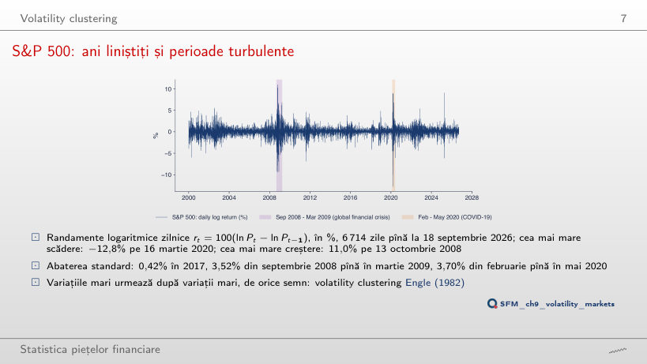
Răspuns
De 8,3 ori: 3,52/0,422 = 8,34; între februarie și mai 2020, 3,70/0,422 = 8,76. Abaterea standard a întregului eșantion, 1,21%, este o medie a zilelor liniștite și a celor agitate și nu descrie niciun regim: episodul din 2008 este de 2,9 ori peste ea.
Media condiționată și varianța condiționată
Exemplu rezolvat: varianța condiționată și varianța necondiționată
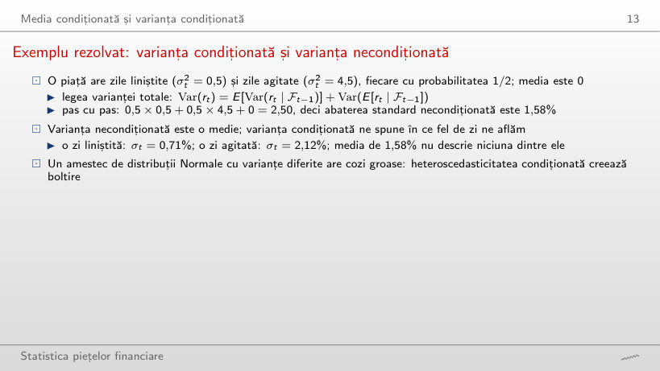
Exemplu lucrat: legea varianței totale
Răspuns
1,58%: varianța necondiționată este media varianțelor, 0,5 × 0,5 + 0,5 × 4,5 = 2,50, iar √2,50 = 1,58. Media volatilităților, (0,71 + 2,12)/2 = 1,41%, este mai mică, pentru că rădăcina pătrată este concavă. Amestecul are boltirea 4,92, deși fiecare regim este Normal.
Modelul ARCH
ARCH(1): proprietăți
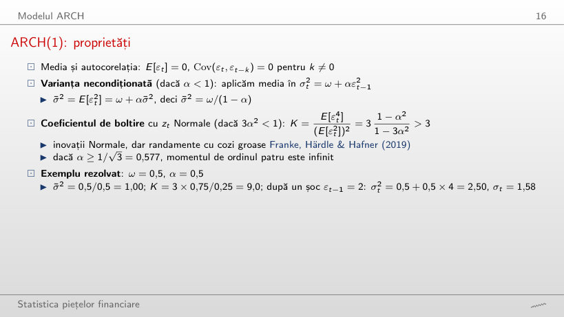
Exemplu lucrat: varianța necondiționată, boltirea și un pas ARCH(1)
Răspuns
Devine infinită: 3α² = 1,08 ≥ 1, adică α depășește 1/√3 = 0,577, iar momentul de ordinul patru nu mai există. Varianța necondiționată rămîne finită, ω/(1 − α) = 0,5/0,4 = 1,25.
Traiectorii simulate: i.i.d., ARCH(1) și GARCH(1,1)
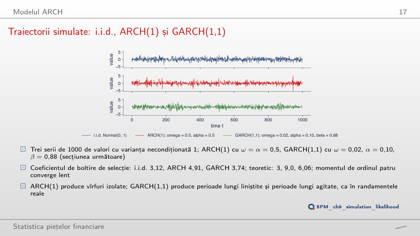
Răspuns
4,91, mult sub 9,0: momentul de ordinul patru converge lent, pentru că depinde de cîteva vîrfuri rare. Seria i.i.d. are 3,12 (teoretic 3), GARCH(1,1) are 3,74 (teoretic 6,06). Cu alte semințe ale generatorului valorile de selecție se schimbă mult.
ARCH(q) și limitele lui
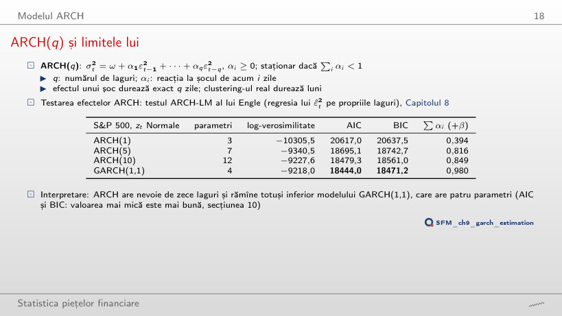
Modele cu inovații Normale (cu verde: cel mai mic AIC și BIC)
Răspuns
GARCH(1,1): BIC 18 471,2 față de 18 561,0 pentru ARCH(10), cu 89,8 mai mic. Are o verosimilitate mai mare cu de trei ori mai puțini parametri: termenul βσ²(t − 1) rezumă toate șocurile trecute, cu ponderi geometrice. BIC al ARCH(q) scade cu fiecare lag adăugat pînă la q = 10, dar rămîne peste cel al GARCH(1,1).
Modelul GARCH(1,1)
Staționaritate, varianța pe termen lung și boltire
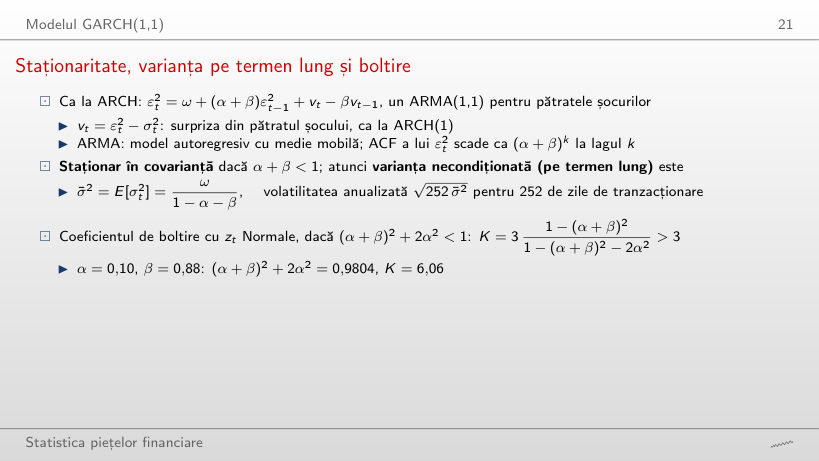
Exemplu lucrat: varianța pe termen lung și boltirea
Răspuns
Infinită: (α + β)² + 2α² = 0,9801 + 0,02 = 1,0001 ≥ 1. Varianța necondiționată rămîne finită (α + β = 0,99 < 1; cu ω = 0,02, σ̄² = 2,00), dar momentul de ordinul patru nu mai există: condiția pentru boltire este mai strictă decît cea pentru staționaritate.
Persistența și timpul de înjumătățire
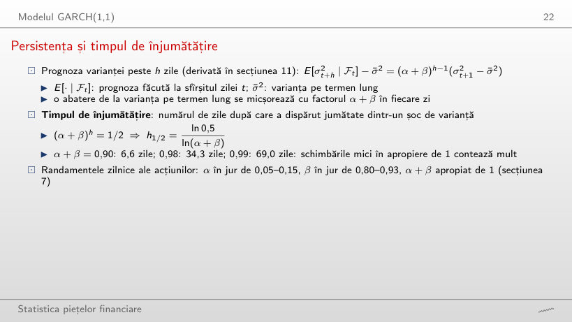
Exemplu lucrat: timpul de înjumătățire
Răspuns
69,0 zile, aproape dublu: h½ ≈ ln 2/(1 − α − β), iar 1 − α − β se înjumătățește, de la 0,02 la 0,01. Pentru 0,90 sînt 6,6 zile; pentru S&P 500 (α + β = 0,9947), 131 de zile.
Exemplu rezolvat: un pas GARCH(1,1)
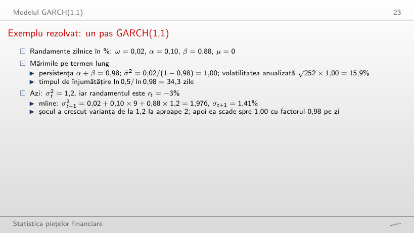
Exemplu lucrat: un pas GARCH(1,1)
Răspuns
Tot 1,976: GARCH(1,1) folosește ε², deci semnul șocului nu contează (aici μ = 0). Varianta 1,376 = 0,02 + 0,10 × 3 + 0,88 × 1,2 uită ridicarea la pătrat. Asimetria cere GJR-GARCH sau EGARCH (secțiunea 8).
IGARCH și legătura cu EWMA
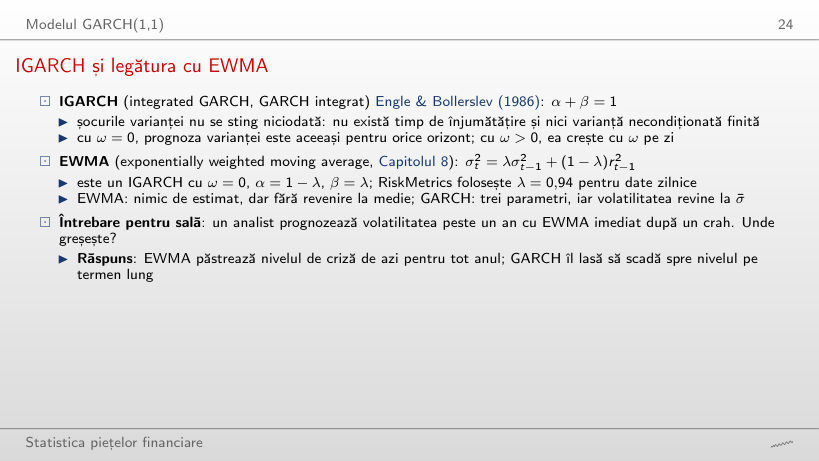
Exemplu lucrat: prognozele IGARCH și GARCH după un crah
Răspuns
EWMA păstrează nivelul de criză pentru tot anul. S&P 500, la închiderea din 16 martie 2020: EWMA (λ = 0,94) prognozează 84,0% pe an pentru orice orizont; GARCH(1,1)-t pornește de la 111,0% și coboară la 62,0% după 250 de zile, spre nivelul pe termen lung de 27,3%. EWMA este un IGARCH cu ω = 0: fără revenire la medie.
Estimarea prin verosimilitate maximă
Verosimilitatea modelului ARCH(1)
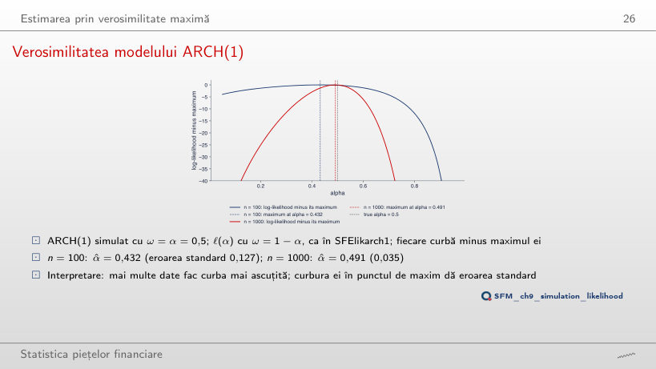
Răspuns
Scade la 0,035, de 3,6 ori; regula √n dă √10 = 3,16. Curba log-verosimilității devine mai ascuțită, iar α̂ = 0,491 este mai aproape de valoarea adevărată 0,5.
Verosimilitatea modelului GARCH(1,1)
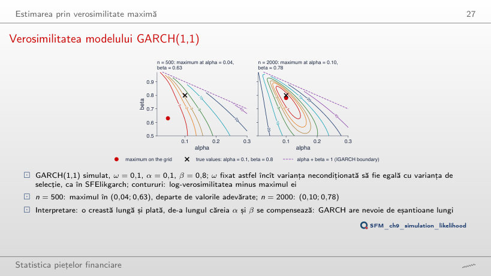
Răspuns
În (0,100; 0,78), aproape de valorile adevărate: creasta lungă de-a lungul căreia α și β se compensează se îngustează cînd n crește. Cu alte semințe ale generatorului (rulări suplimentare), maximul pentru n = 500 variază între (0,025; 0,95) și (0,205; 0,67).
Estimarea pas cu pas și cu un pachet
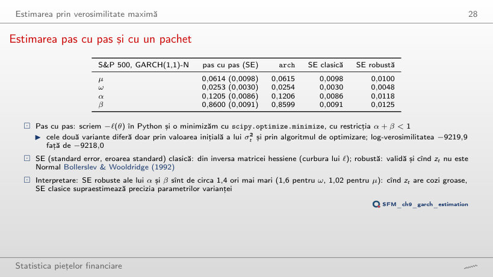
GARCH(1,1) cu inovații Normale: pas cu pas (scipy) și cu pachetul arch
Răspuns
0,0118, de 1,37 ori mai mare (β: 1,37; ω: 1,63; μ: 1,02). Inovațiile au cozi groase, iar SE clasice, calculate ca și cum z(t) ar fi Normal, supraestimează precizia parametrilor varianței. Pentru BET raportul trece de 2,6.
Inovații cu cozi groase
S&P 500: trei distribuții ale inovațiilor
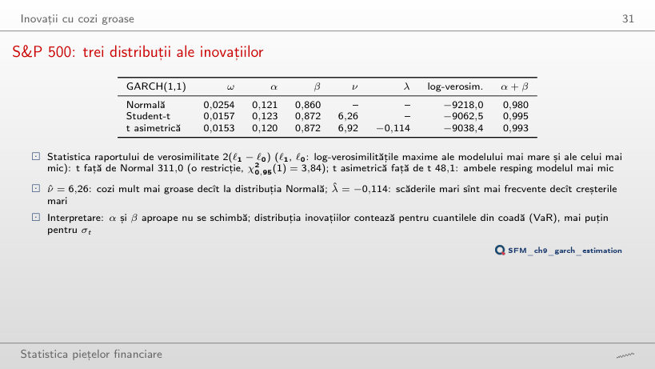
GARCH(1,1) cu trei distribuții ale inovațiilor
Răspuns
Puțin: α de la 0,121 la 0,123, β de la 0,860 la 0,872; persistența urcă de la 0,980 la 0,995. Statistica LR, 311,0, depășește de departe 3,84: distribuția inovațiilor contează pentru cuantilele din coadă (VaR) mai mult decît pentru σ(t).
Graficele QQ ale reziduurilor standardizate
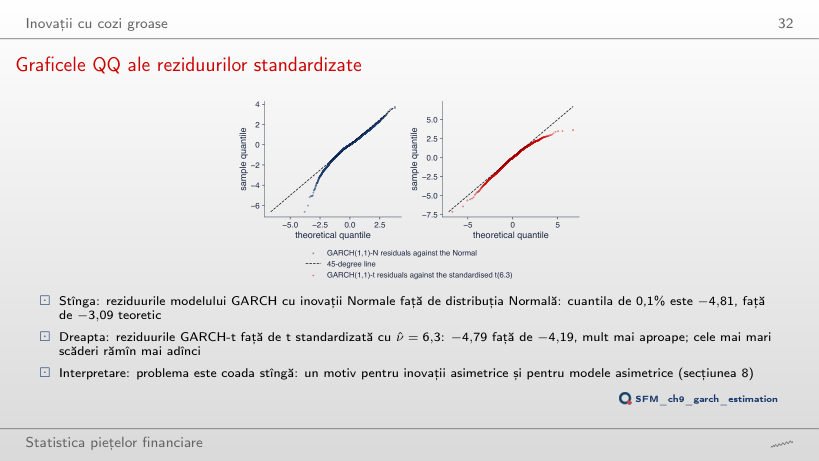
Răspuns
−4,19 = t⁻¹(0,001) × √((ν − 2)/ν) = −5,08 × 0,825. Reziduurile GARCH-t au −4,79: coada t este mult mai aproape, dar scăderile cele mai mari rămîn mai adînci.
GARCH pe șase piețe
Estimările GARCH(1,1)-t
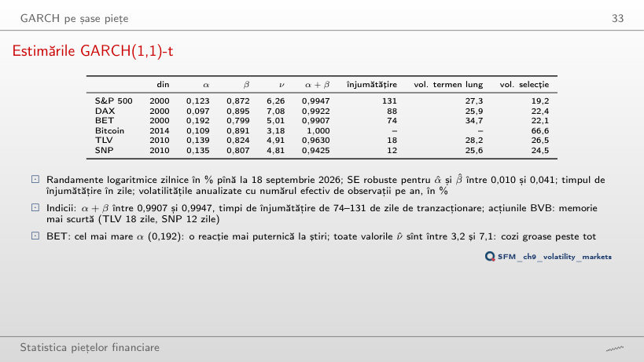
GARCH(1,1) pe șase piețe (SE robuste; volatilitățile anualizate, în %)
Răspuns
O reacție mai puternică la știrile de ieri: un șoc de 2% adaugă 0,192 × 4 = 0,77 la varianța de mîine, față de 0,123 × 4 = 0,49 la S&P 500. Persistența este însă apropiată (0,9907 față de 0,9947), pentru că β̂ al BET este mai mic (0,799).
Interpretarea rezultatelor: Bitcoin și volatilitatea pe termen lung
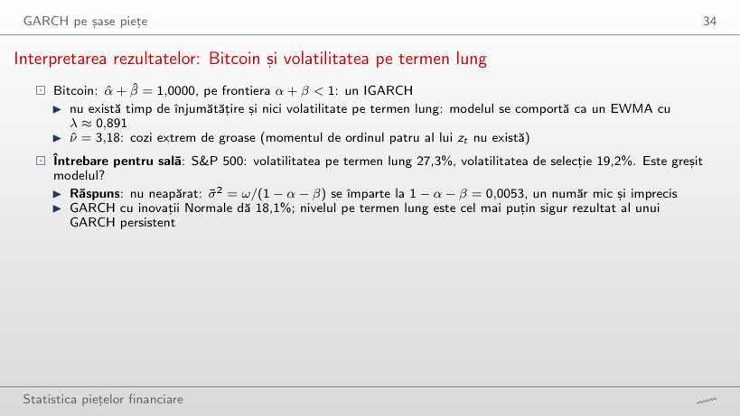
Exemplu lucrat: volatilitatea pe termen lung
Răspuns
Nu neapărat: σ̄² = ω/(1 − α − β) se împarte la 1 − α − β = 0,0053, un număr mic și imprecis. Cu α + β mai mic cu 0,002 (0,9927), volatilitatea pe termen lung ar fi 23,3%; GARCH cu inovații Normale dă 18,1%. Nivelul pe termen lung este cel mai puțin sigur rezultat al unui GARCH persistent.
Volatilitatea condiționată: S&P 500 și DAX
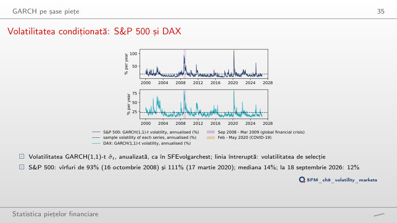
Răspuns
93%, pe 16 octombrie 2008: mai jos decît în 2020, deși criza din 2008 a durat mai mult; vîrful reflectă cele mai mari șocuri dintr-un interval scurt, nu durata crizei. DAX: 80% în 2008 și 82% în 2020. Mediana S&P 500 este 14%, iar valoarea din 18 septembrie 2026 este 12%.
Volatilitatea condiționată: BET și Bitcoin
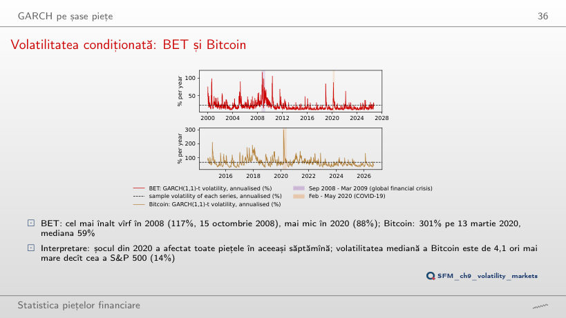
Răspuns
De 4,1 ori (58,7/14,3); raportul varianțelor ar fi 4,1² ≈ 17. Vîrfurile: Bitcoin 301% pe 13 martie 2020, BET 117% pe 15 octombrie 2008 și 88% în martie 2020.
Durata unui șoc de volatilitate
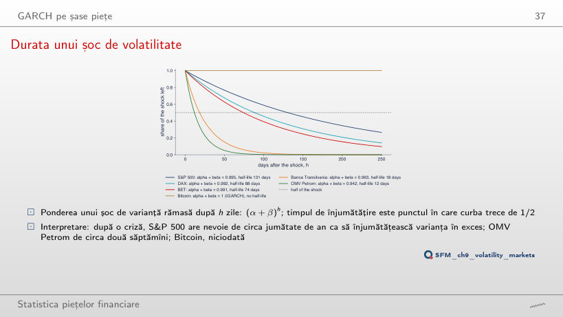
Răspuns
Nu există: α̂ + β̂ = 1,000 (IGARCH), deci un șoc nu se stinge. S&P 500 are nevoie de 131 de zile, DAX de 88, BET de 74, TLV de 18, SNP de 12. Cu GJR-t, persistența S&P 500 (α + β + γ/2) este 0,983, cu un timp de înjumătățire de 41,5 zile.
Asimetria și efectul de levier
GJR-GARCH și EGARCH
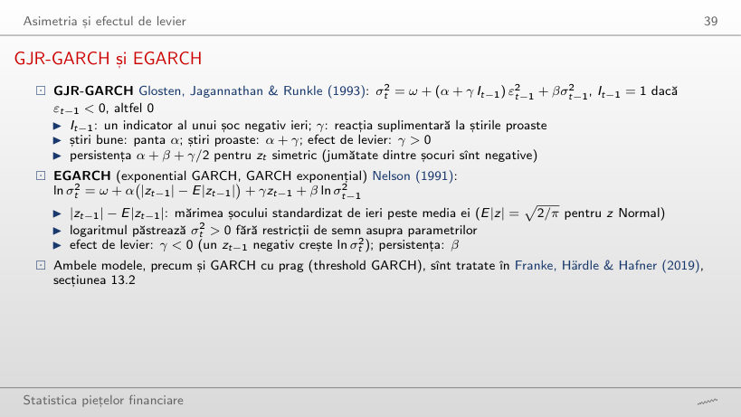
Exemplu lucrat: impactul unei scăderi și al unei creșteri
Răspuns
Cu 0: știrile bune au panta α = 0. După o scădere de 2%, termenul (α + γ)ε² adaugă 0,205 × 4 = 0,821; cu σ²(t − 1) fixat la varianța de selecție 1,471, varianța de mîine este 2,136 după scădere și 1,315 după creștere: raportul 1,62.
Curbele de impact ale știrilor: S&P 500 și Bitcoin
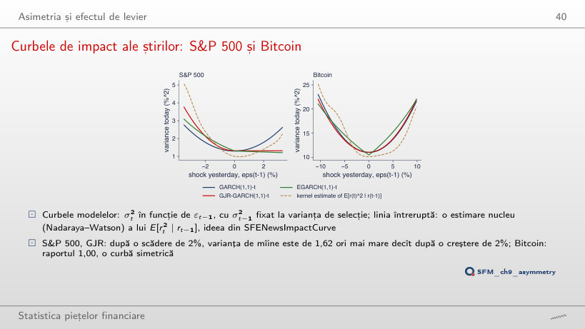
Răspuns
Scade la 1,16: termenul comun βσ²(t − 1) crește, iar diferența γε² rămîne aceeași, deci contează relativ mai puțin. Cu σ²(t − 1) de 4 ori mai mic decît varianța de selecție raportul urcă la 3,39: asimetria se vede cel mai bine în perioadele liniștite.
Asimetria pe șase piețe
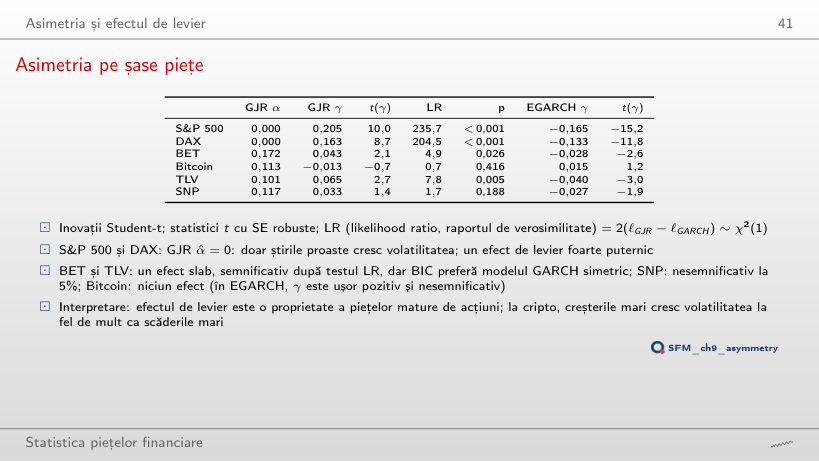
GJR-GARCH(1,1) și EGARCH(1,1): parametrul de asimetrie γ (statistici t cu SE robuste)
Răspuns
BIC cere ca LR să depășească ln T = ln 6 670 = 8,8 pentru un parametru în plus; LR = 4,9 trece de 3,84 (pragul de 5%), dar nu de 8,8: efectul de levier al BET este slab. Pentru Bitcoin BIC alege EGARCH deși γ nu este semnificativ: forma logaritmică descrie mai bine dinamica varianței, nu asimetria.
Diagnostic
Autocorelațiile eliminate de GARCH
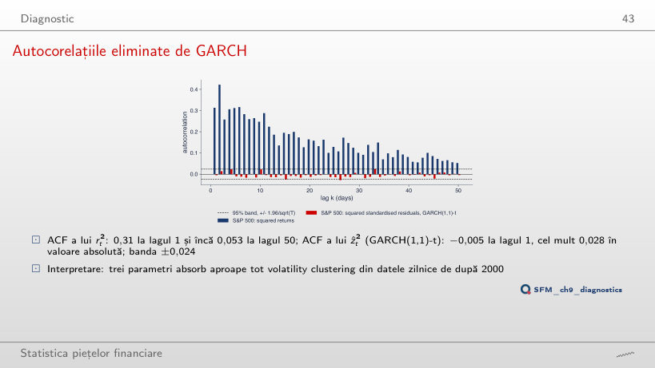
Răspuns
−0,005, în banda ±0,024; cea mai mare valoare absolută pe 50 de laguri este 0,028. Trei parametri ai varianței absorb aproape tot volatility clustering; la lagul 50, ACF a lui r² este încă 0,053.
Diagnostic pe date reale
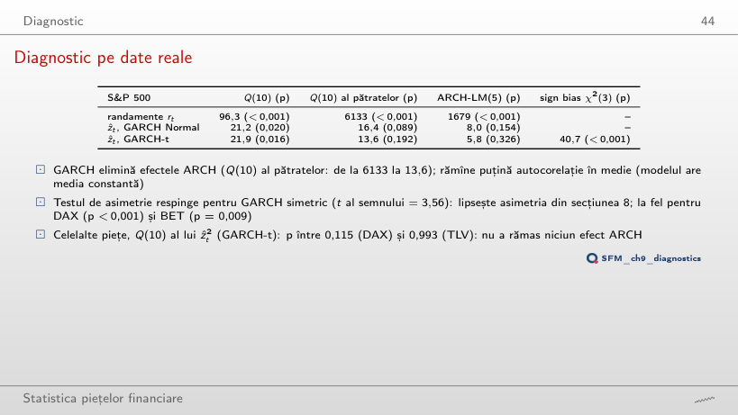
Teste pe randamente și pe reziduurile standardizate
Răspuns
Nu complet: nu au rămas efecte ARCH (Q(10) al pătratelor scade de la 6 133 la 13,6), dar semnul șocurilor trecute încă anticipează varianța (t al semnului 3,56): lipsește asimetria. Un test care nu respinge nu dovedește că modelul este corect.
Alegerea modelului
Nouă modele pentru S&P 500
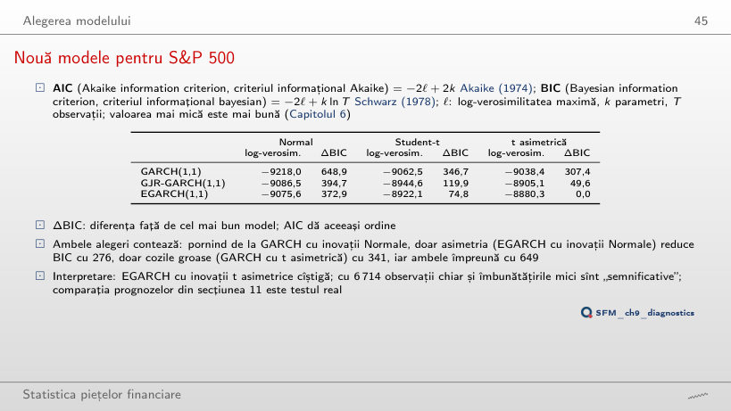
Log-verosimilitatea și diferența față de cel mai bun model (cu verde)
Răspuns
Cozile groase: 341, față de 276 pentru asimetrie; ambele împreună (EGARCH cu t asimetrică) reduc BIC cu 649, cel mai bun dintre cele nouă modele. AIC dă aceeași ordine.
Prognoza volatilității
Exemplu rezolvat: S&P 500 la 18 septembrie 2026
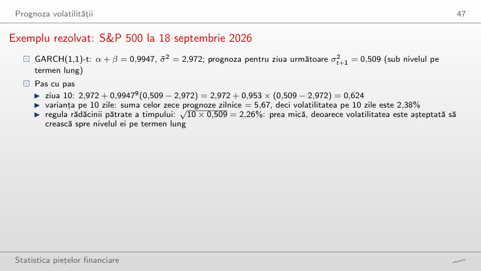
Exemplu lucrat: prognoza pe H zile
Răspuns
2,38%: prognozele zilnice cresc spre nivelul pe termen lung (ziua 10: 0,624), deci suma lor, 5,67, depășește 10 × 0,509 = 5,09. Într-o criză relația se inversează: regula rădăcinii pătrate dă valori prea mari.
Structura la termen a volatilității
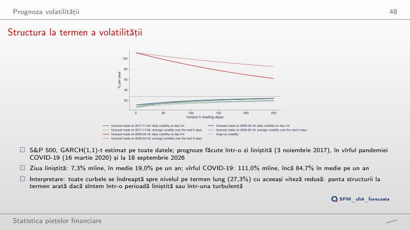
Răspuns
84,7%: cu α + β = 0,9947, abaterea față de nivelul pe termen lung se micșorează cu doar 0,53% pe zi, iar după 250 de zile prognoza zilnică este încă 62,0%. Într-o zi liniștită (3 noiembrie 2017) curba urcă: 7,3% mîine, 19,0% în medie pe un an.
GARCH față de EWMA, în afara eșantionului
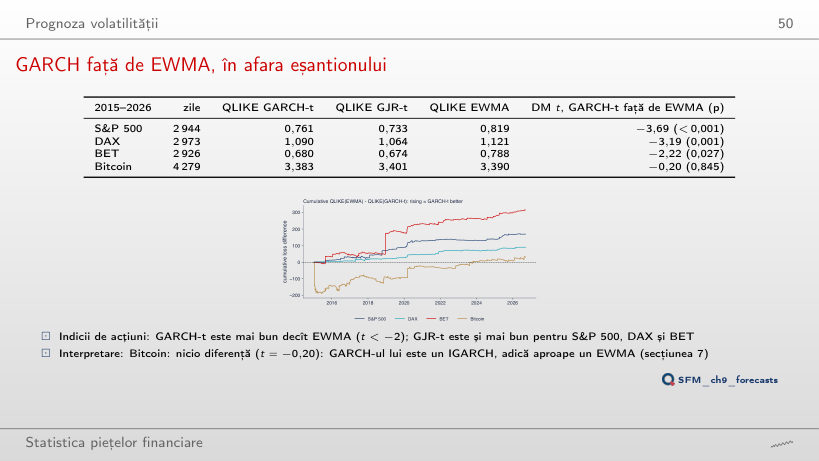
Prognoze ale varianței pentru ziua următoare (cu verde: cel mai mic QLIKE; DM: t și p)
Răspuns
Nicio diferență detectabilă: GARCH-ul Bitcoin este un IGARCH, adică aproape un EWMA. Un p mare nu arată că prognozele sînt egale, doar că testul nu le separă. Pentru S&P 500 (t = −3,69), DAX (−3,19) și BET (−2,22), GARCH-t este semnificativ mai bun.
VaR 1% dintr-un model GARCH
VaR condiționat
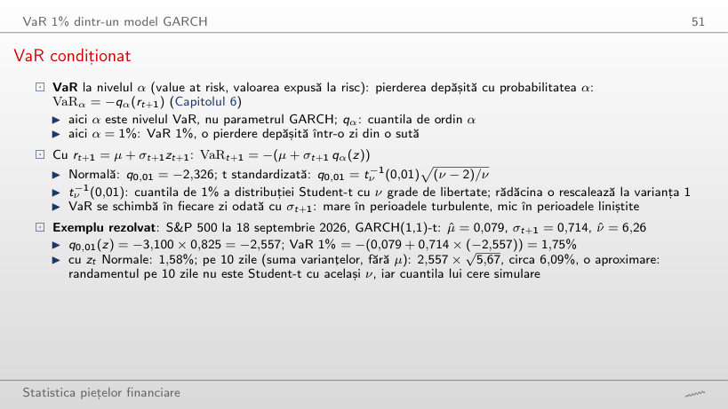
Exemplu lucrat: VaR pe o zi și pe H zile
Răspuns
6,09% = 2,557 × √5,67: volatilitatea este așteptată să crească spre nivelul pe termen lung, deci regula √10 dă prea puțin. Este o aproximare: randamentul pe 10 zile nu are o distribuție Student-t cu același ν, iar cuantila lui exactă cere simulare.
VaR 1% în timpul crahului COVID-19
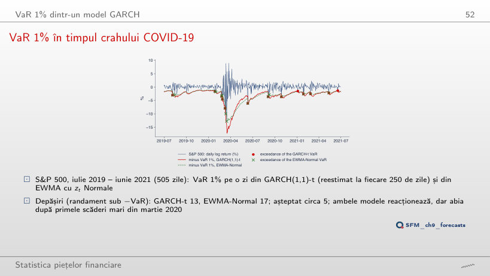
Răspuns
De 13 ori, față de circa 5 așteptate (1% din 505); EWMA-Normal este depășit de 17 ori. Ambele modele reacționează, dar abia după primele scăderi mari din martie 2020: o prognoză pe o zi nu poate anticipa primul șoc.
Depășiri 2015–2026: o primă privire asupra backtesting-ului
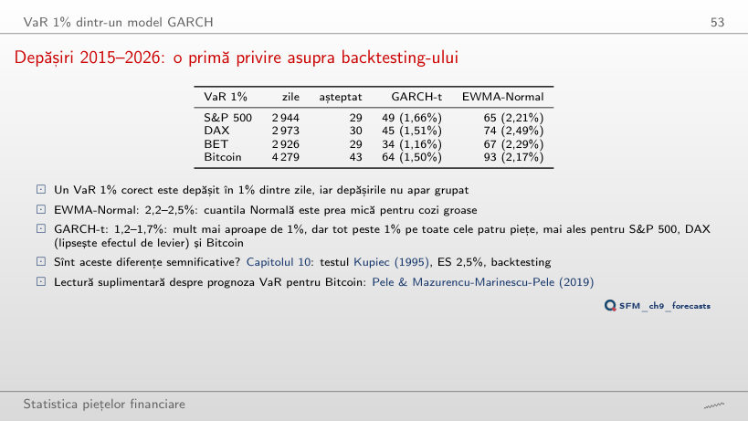
Depășiri ale VaR pe o zi, în afara eșantionului
Răspuns
Cuantila Normală, −2,326, este prea puțin adîncă pentru cozile groase. GARCH-t, cu cuantila Student-t, are 1,2–1,7%: mult mai aproape de 1%, dar tot peste 1% pe toate cele patru piețe. Dacă diferențele sînt semnificative se testează în Capitolul 10 (testul Kupiec).
Randamente logaritmice zilnice, în %: S&P 500, DAX și BET din ianuarie 2000, Bitcoin din septembrie 2014 (7 zile pe săptămînă), Banca Transilvania (TLV) și OMV Petrom (SNP) din 2010, din prețul ajustat, pînă la 18 septembrie 2026; cele două zile greșite ale TLV din mai 2016 sînt eliminate. Prețuri EODHD. Modelele sînt estimate cu pachetul arch, cu codul din curs (verosimilitate maximă, SE robuste); din parametrii estimați, browserul reconstruiește varianța condiționată zi cu zi și calculează din ea reziduurile standardizate, graficele QQ, curbele de impact al știrilor, testele de diagnostic, criteriile informaționale, prognozele și VaR. Prognozele în afara eșantionului ale GARCH-t și GJR-t (reestimate la fiecare 250 de zile) sînt cele din curs; EWMA, pierderile QLIKE, testele DM și depășirile sînt recalculate în browser. Simulările folosesc extragerile Normale ale generatorului din curs (aceeași sămînță). Alte distribuții ale inovațiilor, alte începuturi ale eșantionului, alte piețe pentru tabelele S&P 500, ARCH(q) cu alte ordine, alte semințe și alți parametri ai simulărilor, alte niveluri ale VaR și alte perioade de evaluare sînt rulări suplimentare ale aceluiași cod.